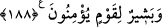

ortaya koymak üzere bir giriş olması içindir.
“Fakat insanların çoğu” kıyâmetin vaktinin Allah Teâlâ’ya mahsus bir ilim olduğunu
“bilmezler.” Bazısı kıyameti inkar eder, bazısı onun muhakkak kopacağını bilir ve senin
kıyâmetin kopacağı vakti bildiğini zannederek bilgisizliği yüzünden sana sorar. Bir
kısmı ise kıyametin kopma vaktini bilmeyi peygamberliğin gereklerinden sayarak ondan
sormayı senin peygamberliğine saldırmak için bahane olarak kullanır.
188. De ki: “Ben, Allah’ın dilediğinden başka kendime herhangi bir fayda veya
zarar verecek güce sahip değilim. Eğer ben gaybı bilseydim elbette daha çok hayır
yapmak isterdim ve bana hiçbir fenalık dokunmazdı. Ben sadece inanan bir kavim
için bir uyarıcı ve müjdeleyiciyim.”
“De ki: “Ben kendime Allah’ın dilediğinden başka bir fayda veya zarar verme
gücüne sahip değilim.” Yani kendim için bir menfaat sağlamaya ve bir zararı
kendimden uzaklaştırmaya kadir değilim. Faydasına ve zararına olacak şeylerin nelerde
olduğunu bilmeyen kimse, kıyametin kopma zamanını nasıl bilebilir? Bunlardan ancak
Allah Teâlâ’nın bana ilham ederek, güç ve kudret vererek muktedir kıldıkları
müstesnâdır. Yâhut da sadece Allah’ın dilediği fayda veya zarar tahakkuk eder.
“Eğer gaybı bilseydim elbette çok hayır elde ederdim” çok mal ve menfaat
kazanırdım “ve bana hiçbir fenalık” düşman hilesi, fakirlik, zarar ve diğer kötülükler
“dokunmazdı.” Fakat “Ben sadece inanan bir kavim için bir uyarıcı ve
müjdeleyiciyim.” yani, ben ancak korkutmak ve müjdelemek üzere peygamber olarak
gönderilmiş bir kulum. Beni ilgilendiren, dînî ve dünyevî ilimlerden korkutmaya ve
müjdelemeye ait olan hususlardır; yoksa şeriatın hükümleriyle alâkası olmayan gaybı
bilmek değil. Kıyametin kesin olarak kopacağını ve yakın olduğunu belirtmek, onun
durumunu açıklamak için yeterlidir. Kıyâmetin vaktini belirlemek ise sakındırmanın bir
gereği değildir. Bilakis bu belirleme sakındırmanın etkisini azaltır. Çünkü kıyametin
vaktinin gizli tutulmasının günahlardan uzak durma konusunda tesirinin daha büyük
olduğu daha önce geçmişti.
“İnanan kavm”in özellikle zikredilmesi, müjdeden faydalandıkları gibi uyarmadan da
istifade edenlerin onlar olduğu içindir. Ya da “Ben küfürlerinden dönmeyen kâfirler için
bir uyarıcı ve ne vakit olursa olsun mü’minler için bir müjdeleyiciyim.” demektir.
Burada kâfirleri imânâ gelmeye teşvik, küfür ve azgınlıkta ısrardan sakındırma vardır.
Haddâdî, tefsirinde der ki: Bu ayet, “Dünyanın ömrü, yedi bin yıldır.” şeklindeki bir